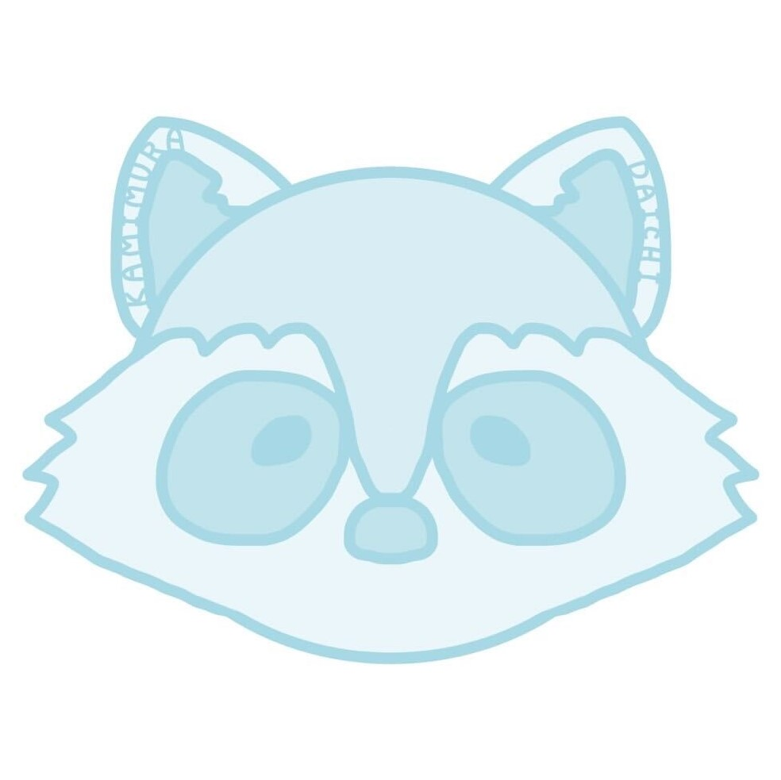
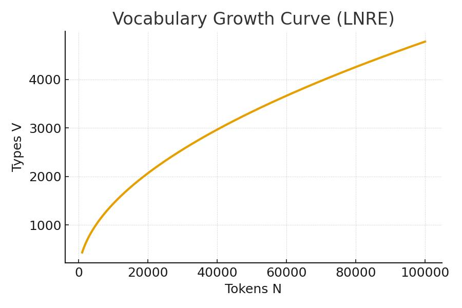
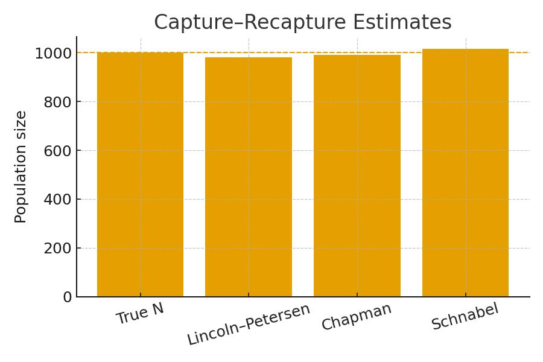
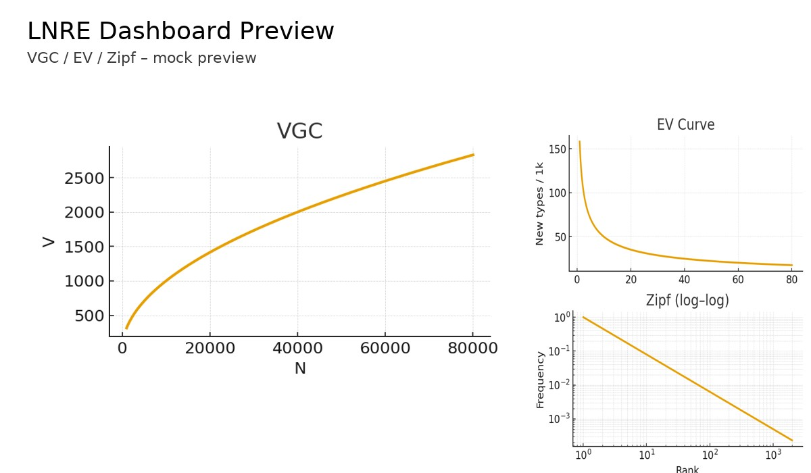

データ分析と R/Shiny を使ったインタラクティブな可視化が好きです。I love interactive visualization using Data Analysis and R/Shiny. 心理統計の知見を、実務で誰でも使えるWebアプリケーションまで落とし込むことを目指しています。I aim to translate insights from psychometrics into web applications that anyone can use in practice.

語彙成長（VGC）や EV 曲線をインタラクティブに確認し、収集の打ち止め時期を検討できる UI。UI to interactively check Vocabulary Growth Curves (VGC) and EV curves to determine when to stop data collection.

Chapman 推定など複数指標を並行比較できる小ツール。推定の幅や前提の違いを直感的に確認。A small tool to compare multiple metrics like Chapman estimation. Intuitively check the range of estimates and differences in assumptions.
来年から就職予定。大学院では心理統計の知見を活かし、Starting a new job next year. In graduate school, leveraging insights from psychometrics, テキストデータの飽和推定とインタラクティブな可視化アプリを制作してきました。I have been creating interactive visualization apps for estimating text data saturation. 実務では“数値の根拠が伝わる UI”づくりで貢献したいと考えています。In practice, I aim to contribute by creating UIs that convey the basis of numbers.
FinTec分野でデータコンサルタントとして従事。Working as a Data Consultant in the FinTech field.
LNREモデルを用いた新しい指標の提案。Proposing new metrics using LNRE models.
データ分析に携わる仕事に就くことを目標に技術と知識を深める。Deepening skills and knowledge with the goal of working in data analysis.
遺伝的アルゴリズムを用いて満足度を最大化させるルート探索アルゴリズム。日本心理学会のプレゼンバトルで発表。Route search algorithm maximizing satisfaction using Genetic Algorithms. Presented at the Japanese Psychological Association presentation battle.
データ分析のコンペティション大会に参加。Rの技術を深める。Participated in data analysis competitions. Deepened R skills.
脳科学に興味があり、心理学部に進む。Rに出会う。Interested in Neuroscience, entered the Faculty of Psychology. Encountered R.
自由記述データの量をどこまで集めればよいか？ How much open-ended data should be collected? LNRE（fZM）や再捕獲アプローチを併用し、飽和到達点やVGCを可視化・推定します。Using LNRE (fZM) and capture-recapture approaches to visualize and estimate saturation points and VGC.

zipfRベースのVGC/EVで収束の様子を可視化。Visualize convergence with zipfR-based VGC/EV.
しきい値（例: slope<0.05）や有限母集団仮定で判断。< /span>Judged by threshold (e.g., slope < 0.05) or finite population assumption.
Chapman推定など複数指標を並行比較。Parallel comparison of multiple metrics like Chapman estimation.
図表をまとめてエクスポート（将来対応）。Export charts and tables (Future support).